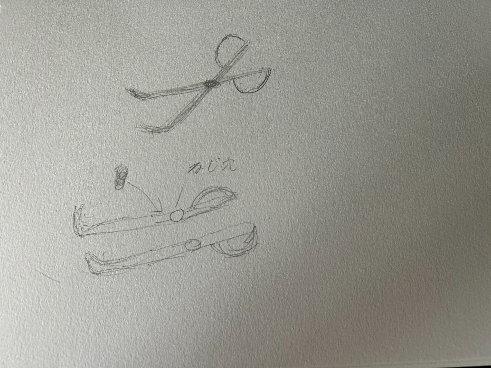
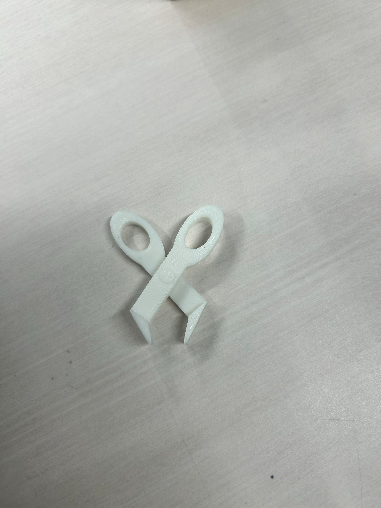

ピンセット作成
スケッチ

実際の作品

設計ファイル
fusion共有リンク作品の説明と作ろうと思った経緯
普通のピンセットを使っていた時、つかみづらかったり、力を入れると持ち手が滑ってしまう感覚がありました。
その時に、はさみのような持ち手があれば滑ったりするようなことがなく、使いやすいのではと考えました。
そして取っ手をつけてしっかりつかめるようにしました。
製作過程であった失敗
- あけた穴と突起の直径を全く同じサイズにしてしまって組み立てることができなかった。
- 最初はねじ穴で作ろうと思ったが、先端が出っ張っているから回せないと判断して断念した。